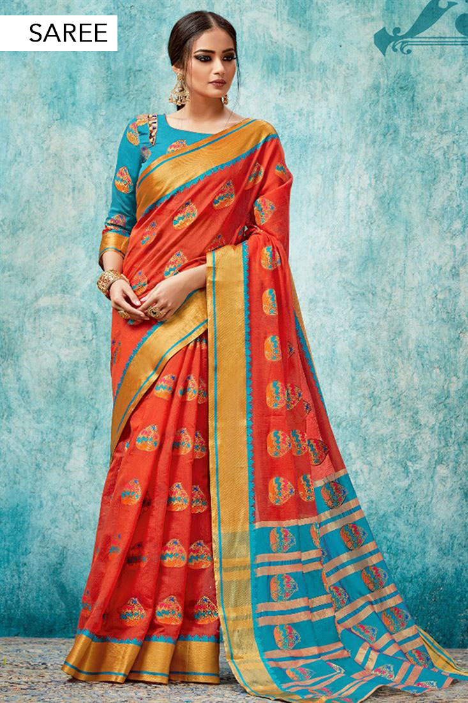
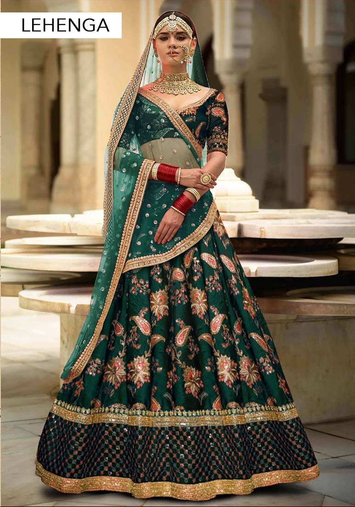
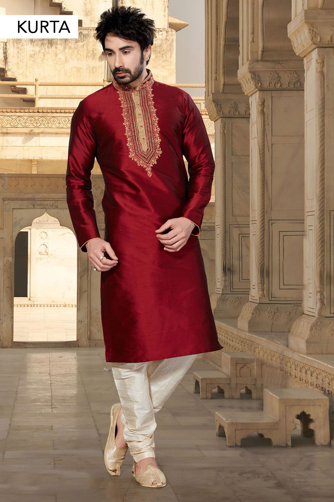
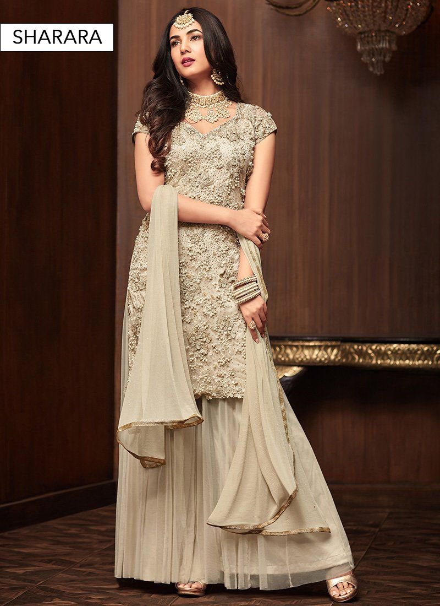

From left to right, the models are wearing a saree, lehenga, kurta and sharara, which are various types of Indian attire. In urban areas, it is common to see both men and women wearing more Western-influenced clothes, and in a business context suits and ties for men are the norm. A saree consists of an unstitched draping style that is wrapped around the waist. It is frequently embroidered in cotton, silk or synthetic cloth and is usually brightly coloured. It can be an heirloom passed down through generations, or a purely functional garment worn everyday.
It's seen on streets and runways, and has influenced fashion designers across the world.
A lehenga is a long skirt with a blouse and a drape (dupatta). Lehenga cholis started off as the humble garb of common women in the rural areas of Rajasthan and Gujarat. Over the centuries, many different varieties emerged, some of which were much finer and more expensive than their daily wear cousins. Lehenga cholis eventually became a favorite dance costume and began to be worn by upper-class women as well. Kurtas are a long, loose shirt that reaches till the knees. It was commonly worn by men, but now has become a form of unisex clothing. Lots of men prefer wearing a kurta pajama at night to sleep due to its comfort and fabric.
A sharara is a type of loose pants that are flared and wide-leg. Originating in Lucknow, they are usually paired with a long kurti and are commonly seen worn by brides and during weddings. While these are just some options that are available in Indian clothing, there is a wide range of options available; anarkali (long and flowy top), and lungi (a garment similar to a sarong that is wrapped around the waist, below the belly button, extending to the ankles),